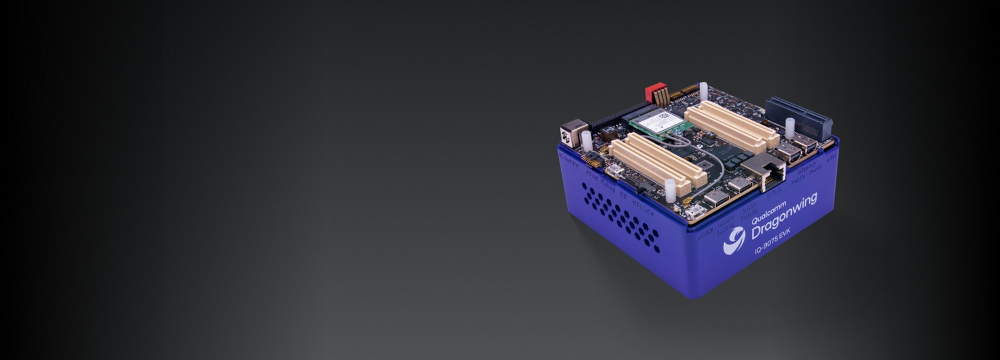

Lemans
SoC SA8775P / QCS9075 · Qualcomm IQ-9075 EVK
OP-TEE on the Qualcomm IQ-9075 Evaluation Kit: build, flash and boot chain, LAVA remote flashing, and a slide-by-slide deep dive of the build system.
Open Lemans docs →A build system for OP-TEE on Qualcomm hardware — enabling TrustZone open firmware development with the same tooling and workflows used across the OP-TEE ecosystem. Pick a board to dive in.

OP-TEE on the Qualcomm IQ-9075 Evaluation Kit: build, flash and boot chain, LAVA remote flashing, and a slide-by-slide deep dive of the build system.
Open Lemans docs →
OP-TEE on the Qualcomm RB3 Gen2: the firmware replacement, quick-start repo/sync/build/flash, and a slide-by-slide deep dive of the Kodiak build system.
Open Kodiak docs →